Latihan
Pilih latihan
Feedforward Neural Networks
Differential Equations
PINNs Forward Problems
PINNs Inverse Problems
Feedforward Neural Networks
Example 1
y = f (w 1 x 1 + w 2 x 2 + b 1 )
→ y = f (g (x 1 , x 2 ))
y = f (w 5 f (w 1 x 1 + w 2 x 2 + b 1 )
+ w 6 f (w 3 x 1 + w 4 x 2 + b 2 ) + b 3 )
where f is a nonlinear activation function, such as tanh, ReLU, etc.
Example 2
The basic application of neural networks is function approximation or regression.
Approximating u (x ) = sin(4πx ), x ∈ [0, 1].
Finding the neural network function u (x , W ) using optimization.
Choose some collocation points: x k k , k = 0,1, … , 100.
Unknowns: the weights W .
Loss function:
L (W ) = MSE
where
MSE
=
1 n
∑
k = 1 n
(
u (
x k , W )
−
u true ( x k )
)
2
Standard optimizer, gradient descent: W new W old L (W ).
Quasi-Newton: the BFGS algorithm.
Optimization: BFGS algorithm
Result
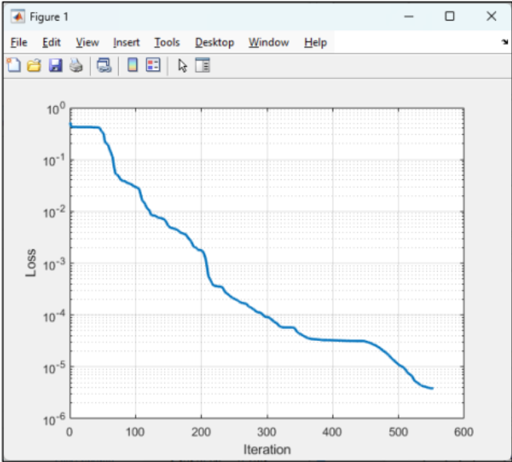
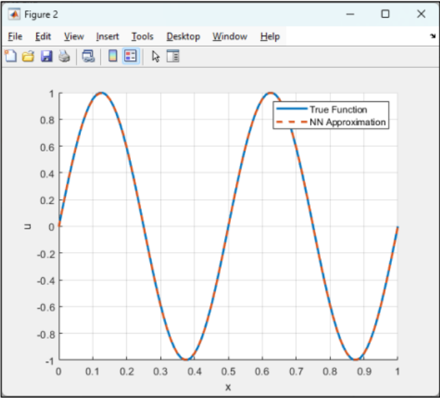
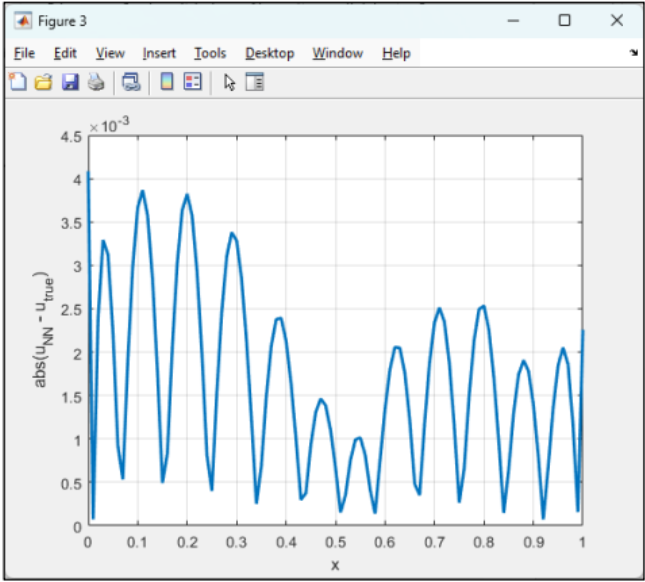
Differential Equations
Example
The one-dimensional Bratu equation:
u xx C e u x ∈ [0, 1]
u (0) = 0, u (1) = 0
C = 2
Analytical solution:
u ( x )
=
2 ln (
cosh θ
cosh (
θ ( 1 − 2 x )
)
)
where θ ≈ 0.589387763469351.
Finding the approximation u (x k u k finite difference method (FDM).
Divide the domain [0, 1] into n = 100 subintervals. Choose h = 1/n .
Take collocation/grid points: x k k , k = 1,2, … , 99.
Unknowns: u k k = 1,2, … , 99.
Set u 0 = 0, u 100 = 0.
Discretization of the Bratu equation:
u xx x k C e u (x k k = 1,2, … , 99
Approximating u xx x k
u xx ( x k )
≈
u k + 1 − 2 u k +
u k − 1
h 2
New system of nonlinear equations:
u k + 1 − 2 u k +
u k − 1
h 2
+ C
e u k = 0 ,
k = 1 , 2 , … , 99
Optimization: the Levenberg-Marquardt algorithm.
Result
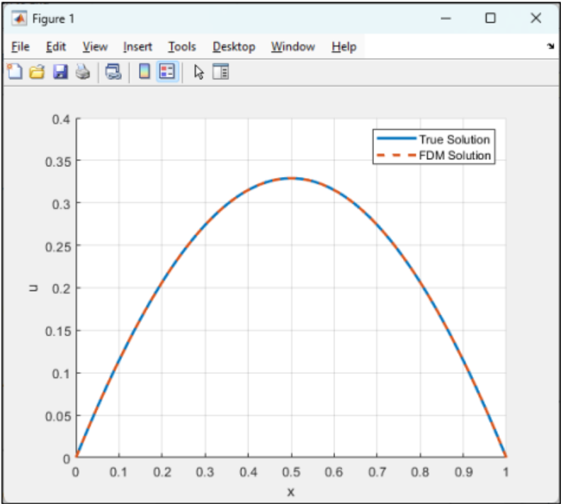
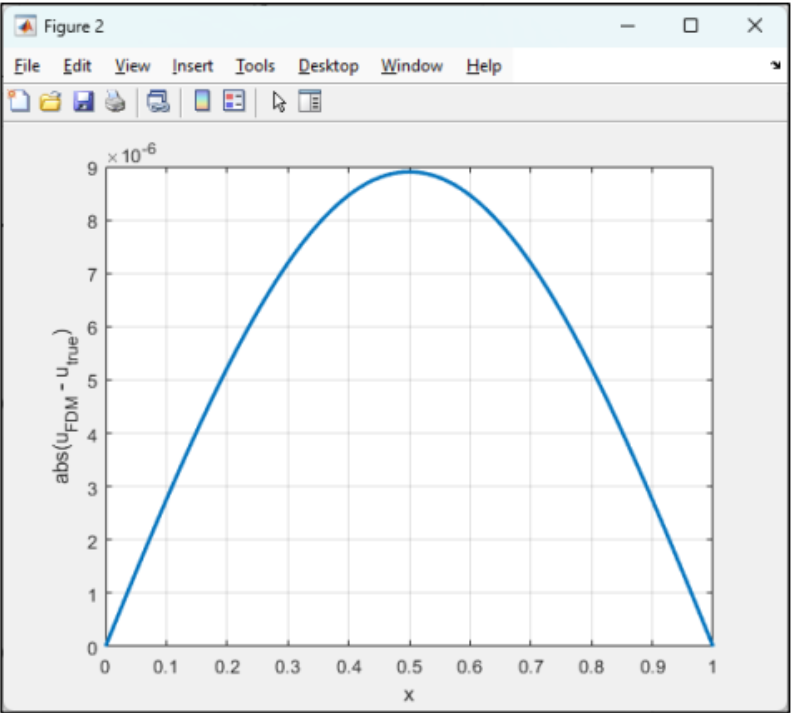
Physics-Informed Neural Networks (PINNs) - Forward Problems
Example
The one-dimensional Bratu equation:
uxx + Ceu = 0, x ∈ [0, 1]
u(0) = 0, u(1) = 0
C = 2
Analytical solution:
u(x) = 2 ln(cosh θ / cosh(θ(1 − 2x)))
where θ ≈ 0.589387763469351.
Choose some random interior points: xk i ∈ (0, 1), ni = 99.
Two boundary points: x1 b = 0, x2 b = 1, nb = 2.
Loss function:
L(W) = MSEi + MSEb
where
MSEi = (1/ni ) ∑k=1 ni (uxx (xk i , W) + 2eu(xk i , W) )2
and
MSEb = (1/nb ) ∑k=1 nb (u(xk b , W) − 0)2
Or
L(W) = MSEi + αMSEb
where α balances the two terms.
Optimization: BFGS algorithm
Result
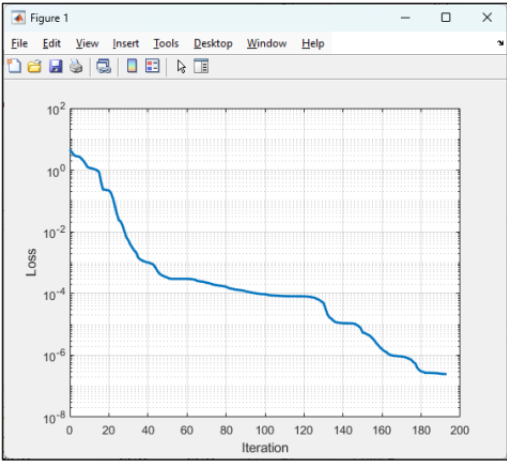
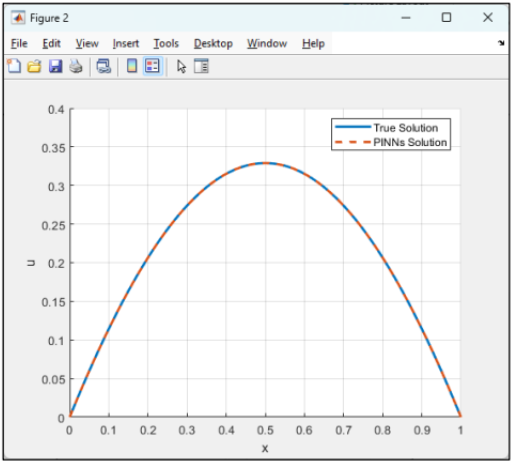
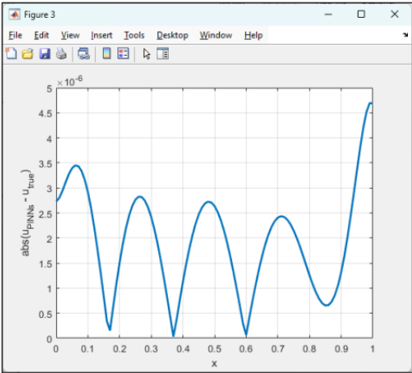
Physics-Informed Neural Networks (PINNs) - Inverse Problems
Example
The one-dimensional Bratu equation:
uxx + λ1 eλ2 u/2 = 0, x ∈ [0, 1]
u(0) = 0, u(1) = 0
C = 1. True values: λ1 = 1 and λ2 = 2.
Objective: Given partial observations of the solution (data) and the known structure of the differential equation, the objective is to identify λ while simultaneously approximating the solution u.
Given: {xk , u(xk )}, k = 1, ..., n.
Loss function:
L(W, λ1 , λ2 ) = MSEde + MSEdata
where the differential equation residual
MSEde (W, λ1 , λ2 ) = (1/n) ∑k=1 n (uxx (xk , W) + λ1 eλ2 u(xk , W)/2 )2
and
MSEdata (W) = (1/n) ∑k=1 n (u(xk , W) − utrue (xk ))2
Or by considering least squares problem F = [Fde ; Fdata ] where
Fde = [uxx (xk , W) + λ1 eλ2 u(xk , W)/2 ] and Fdata = [u(xk , W) − utrue (xk )]
Optimization: the Levenberg-Marquardt algorithm
Result
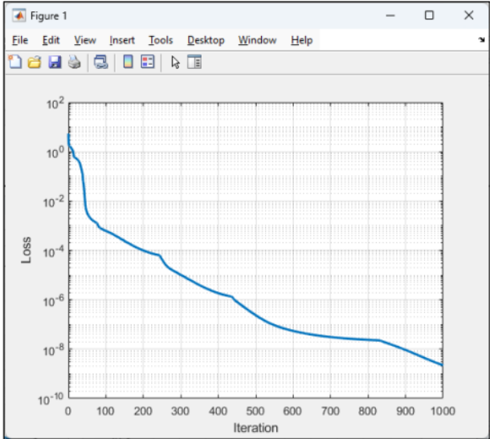
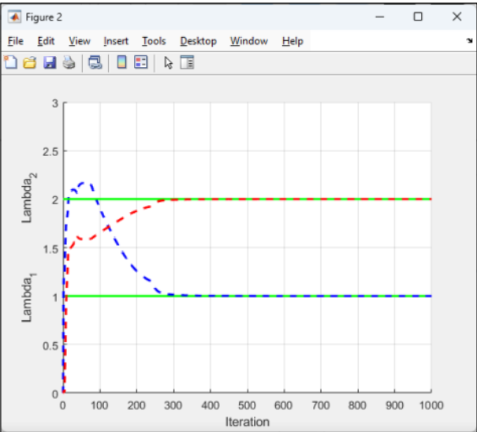
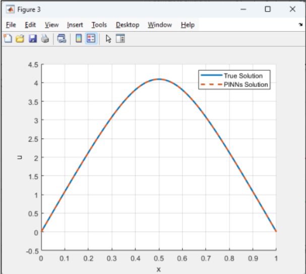